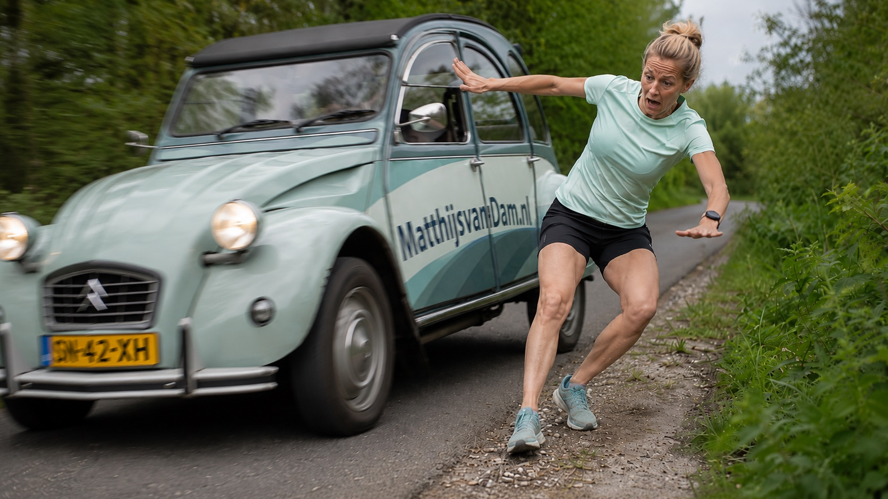

Artikel voor zorgprofessionals
Na een verzwikte enkel: waarom sommige enkels instabiel blijven
Een multicenterstudie in Academic Radiology volgde 474 patienten na een eerste acute laterale enkelverzwikking. Vroege MRI-bevindingen, waaronder talus-kraakbeenletsel en talonaviculair ligamentletsel, hingen samen met chronische enkelinstabiliteit na twee jaar.
Een laterale enkelverzwikking lijkt vaak een overzichtelijk sportletsel. De enkel wordt dik, lopen doet pijn en na een paar weken gaat het bij veel mensen duidelijk beter. Toch blijft een deel klachten houden: onzekerheid, opnieuw zwikken, pijn na belasting of het gevoel dat de enkel niet betrouwbaar is.
Een multicenterstudie die op 2 juli 2026 in Academic Radiology verscheen, maakt die groep beter zichtbaar. De onderzoekers volgden 474 patienten na een eerste acute laterale enkelverzwikking. Iedereen kreeg binnen twee weken een MRI. Na 24 maanden had 34,4 procent chronische enkelinstabiliteit volgens de Cumberland Ankle Instability Tool en symptoombeoordeling.[1]
Dat percentage is geen reden om elke verzwikte enkel groot te maken. Het laat wel zien dat de eerste indruk niet altijd voorspelt hoe het herstel verloopt.
Wat de studie onderzocht
De onderzoekers keken niet naar de vraag welke behandeling het beste is. Zij onderzochten welke vroege MRI-bevindingen samenhingen met chronische enkelinstabiliteit twee jaar later. Twee musculoskeletale radiologen beoordeelden onder meer ligamentletsels, botoedeem, gewrichtsvocht en osteochondrale letsels.
Drie factoren bleven als onafhankelijke voorspellers overeind: hogere leeftijd, een osteochondraal letsel van de talus en letsel van het talonaviculaire ligament. Daarnaast vonden de onderzoekers combinaties van bevindingen die het risico verder verhoogden. Zo werden onder meer combinaties beschreven van talus-kraakbeenletsel met mannelijk geslacht of ernstig calcaneofibulair ligamentletsel, en van ernstiger talonaviculair ligamentletsel met andere ligamentletsels.
De waarde van de studie zit vooral in dat combinatiedenken. Een enkelverzwikking is niet altijd alleen een band aan de buitenzijde die tijdelijk te veel rek kreeg. Soms zijn meerdere structuren betrokken. Dat hoeft niet meteen tot een andere behandeling te leiden, maar kan wel helpen verklaren waarom sommige enkels meer aandacht vragen in de follow-up.
Niet iedere enkel heeft een MRI nodig
De belangrijkste valkuil is een te snelle vertaling. Deze studie bewijst niet dat iedereen na een eerste enkelverzwikking een MRI moet krijgen. In de gewone Nederlandse zorg blijft het tijdsbeloop belangrijk: kan iemand belasten, nemen pijn en zwelling af, keert vertrouwen terug, en lukt het om activiteiten rustig op te bouwen?
Thuisarts beschrijft bij een verzwikte enkel terecht de basis: beoordelen of er aanwijzingen zijn voor ernstiger letsel, rustig opbouwen, en aandacht voor sterker maken van de enkel na de eerste fase. Die basis verandert niet doordat een radiologische studie betere risicoprofielen beschrijft.[3]
De betekenis ligt daarom niet in meer beeldvorming als reflex, maar in selectie. Bij forse pijn, onverwacht traag herstel, herhaald zwikken, diepe gewrichtspijn of slotklachten wordt de vraag preciezer. Dan gaat het niet alleen om "nog wat herstel afwachten", maar om begrijpen welk letselpatroon achter de klachten kan zitten.
Kraakbeenletsel maakt herstel anders
Een osteochondraal letsel van de talus is in deze studie een van de voorspellende MRI-bevindingen. Dat past bij wat voet- en enkelzorg in de praktijk ingewikkeld maakt. Een enkel kan aan de buitenzijde stabieler worden en toch diep in het gewricht pijn blijven geven. Kraakbeen- of bot-kraakbeenletsel gedraagt zich anders dan een eenvoudige bandverrekking.
Dat betekent niet dat elk osteochondraal letsel op MRI een operatie vraagt. Diepe enkelpijn, zwelling na belasting of haperende klachten vragen wel om een andere beoordeling dan alleen angst om opnieuw door te zwikken.
De studie laat niet zien dat MRI-bevindingen op zichzelf de behandeling bepalen. Zij laat zien dat sommige vroege bevindingen samenhangen met het risico dat klachten chronisch worden. Voor patienten en sporters is dat verschil groot. Een scan is geen uitslag over wat iemand moet doen; het is informatie die naast het verhaal, lichamelijk onderzoek en herstelverloop gelegd moet worden.
Instabiliteit is meer dan een losse band
Chronische enkelinstabiliteit is meestal meer dan een losse band. Er kan sprake zijn van bandlaxiteit, maar ook van minder controle, balansverlies, verminderde kracht of veranderd vertrouwen in bewegen. Een recente systematische review over de Brostrom-Gould-procedure laat zien dat bij chronische laterale enkelinstabiliteit open en arthroscopische technieken in grote lijnen vergelijkbare korte-termijnuitkomsten kunnen hebben. De zekerheid van kleine verschillen blijft beperkt.[2]
Die chirurgische context is belangrijk, maar hoort niet vooraan te staan bij een acute verzwikking. De eerste professionele vraag is meestal niet welke operatie past. De eerste vraag is of herstel, oefenopbouw en functie logisch verlopen. Pas wanneer klachten blijven terugkomen of instabiliteit duidelijk persisteert, verschuift de aandacht naar specialistische beoordeling en eventueel chirurgische opties.
Daarmee blijft de volgorde nuchter. Eerst herstel begeleiden. Dan opnieuw beoordelen als het beloop niet klopt. Pas daarna beslissen of aanvullende beeldvorming of specialistische behandeling iets toevoegt.
Wat dit verandert
De studie van Chen en collega's maakt vooral duidelijk dat de acute enkelverzwikking geen eendimensionaal letsel is. De buitenbanden zijn vaak het eerste verhaal, maar niet altijd het hele verhaal. Leeftijd, talus-kraakbeenletsel, talonaviculair ligamentletsel en combinaties van letselpatronen kunnen helpen om beter te begrijpen wie later klachten houdt.
In de praktijk betekent dit vooral: niet iedere enkel dezelfde route geven. Als een enkel na een eerste verzwikking anders herstelt dan verwacht, moet de vraag concreet worden: gaat het om resterende pijn, instabiliteit, vertrouwen, kracht, sportbelasting of een intra-articulaire klacht?
Daar ligt ook de waarde voor regionale samenwerking. Huisarts, fysiotherapeut, sportarts en orthopedisch chirurg zien vaak verschillende fases van hetzelfde letsel. Als beloop, functie en risicofactoren concreet worden benoemd, kan de vervolgstap gerichter worden.
Bronnen
- Chen R, Bai H, Wang X, et al. MRI-based Predictors and Risk Constellations of Chronic Ankle Instability After Acute Lateral Ankle Sprain: A Multicenter Study. Academic Radiology. 2026 Jul 2. DOI: 10.1016/j.acra.2026.06.008. Peer-reviewed studie.
- Liu J, Wan J, Zhang W, Sun K, Zhang R. Arthroscopic vs. open Brostrom-Gould procedure for chronic lateral ankle instability: a systematic review and meta-analysis. Frontiers in Surgery. 2026 Jun 18;13:1859946. Peer-reviewed systematische review/meta-analyse.
- Thuisarts, Ik heb mijn enkel verzwikt en Ik wil mijn enkel sterker maken na een verzwikte enkel. Richtlijn/officiele publieksbron, geraadpleegd 5 juli 2026.